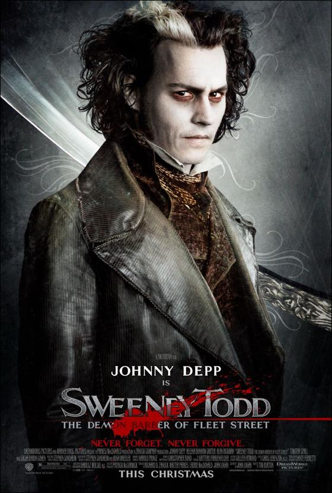
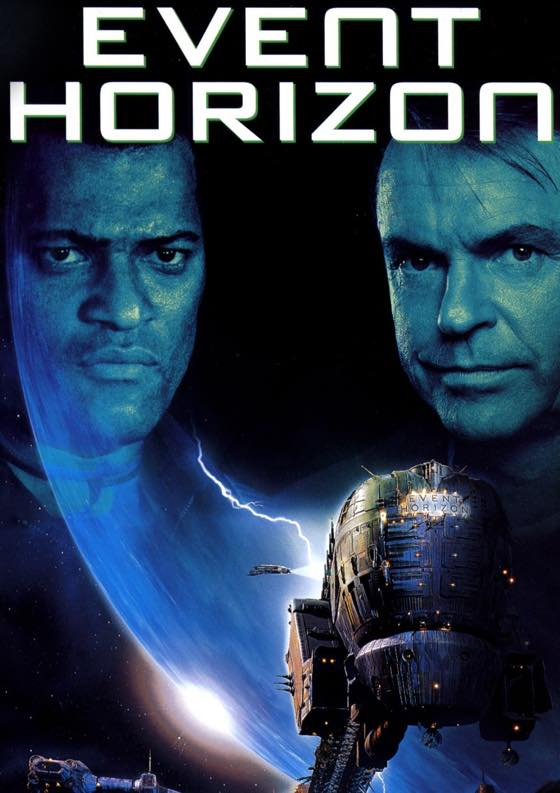

최근본 영화 두편

SWEENEY TODD:: 스위니토드 (2007)
The Demon Barber of Fleet Street
개봉했을때 한국 영화관서 봤었는데 생각나서 다시 찾아봄.
Fleet Street;;; 컨저링2도 그렇고 익숙한 지명이 나오니까 영화가 새삼 다르게 느껴짐
예전에 볼때는 몰랐는데 이게 이렇게 빵빵터지는 영화였나 싶었당
조니뎁 메이크업이 맘에든다
지인은 그시대 아동 노동력 착취 + 10-12살 꼬맹이가 술 병재로 들이붓는게 소 잉글리쉬 란다 ㅋㅋㅋㅋ

EVENT HORIZON:: 이벤트 호라이즌 (1997)
단순히 SF + 호러 필름이라고 알고 보기시작했는데
어우;;; 썰리고 뜯기고 피튀기는 장면 느므 많아 ㅜㅜ
제가 공포영화는 좋아해도 귀신나오는걸 좋아하지 이런 피범벅 영화는 별로 선호하지 않습니당;;
내용 자체는 잼나게 잘 봤어요. 고딕스러운 디자인이 맘에 듭니다 :3